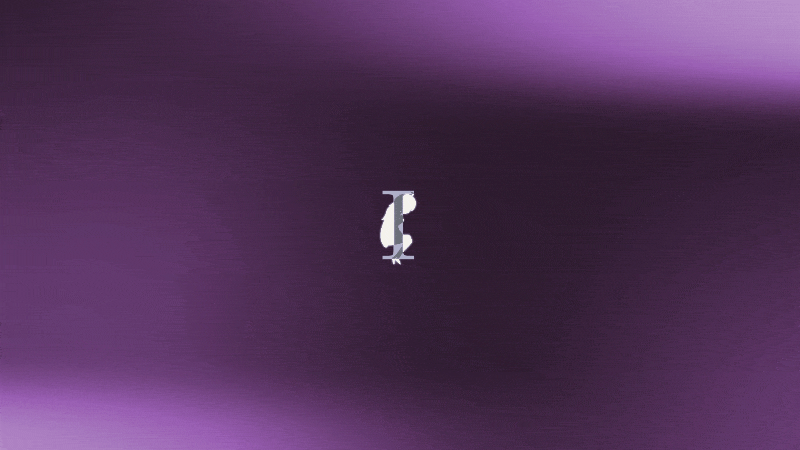
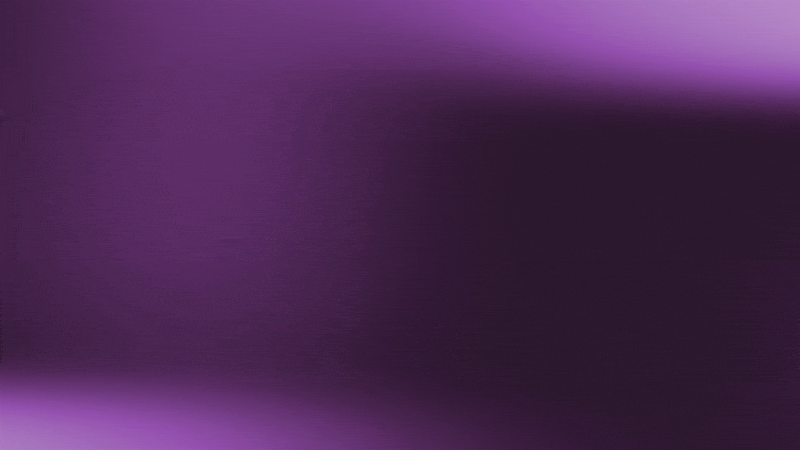

Typographie cinétique avec After Effects
Projet scolaire où il fallait faire une typographie cinétique dans After Effects. J'ai choisi la chanson LIFE, par Neuro-sama.
Informations
Crédits
Chanson d'origine par Neuro-sama
Contexte
Utilisation de l'IA générative?
Aucune utilisation dans ce projet.
Processus 1/5
L'analyse


Lire les paroles, regarder la vidéo, dégager le thème de la chanson pour orienter l'animation, les couleurs et l'atmosphère désirée.
Processus 2/5
La structure


J'ai séparé l'animation en distinct segments pour aise d'animation tout en suivant la structure de la chanson.
Processus 3/5
L'animation

J'ai mis de l'effort dans la fluidité de l'animation, espérant qu'elle soit facilement digestible.
Processus 4/5
L'arrière-plan

J'ai gardé l'arrière-plan simple pour ne pas distraire des animations, mais avec un peu de mouvement pour remplir les moments vides.
Processus 5/5
Le personnage

J'ai eu l'idée de garder le personnage au centre de l'écran et d'avoir les « I » chevauchent celui-ci alors que je cherchais comment agencer les visuels selon le thème. Cela fonctionne aussi comme une ancre visuelle ainsi qu'un motif récurrent.
Résultat
En conclusion
Je n'avais jamais animé de texte auparavant, ce fut donc un défi en terme d'explorer ce qui est possible, mais aussi d'éviter que ce soit trop standard ou générique.